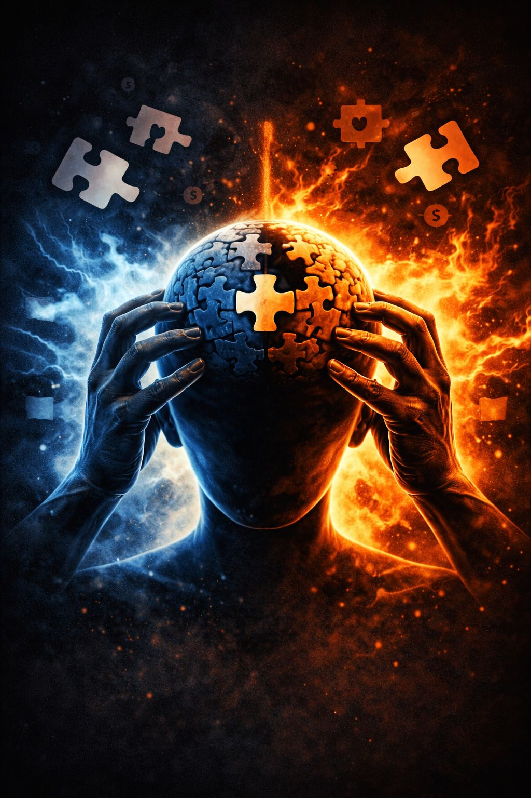

Once fear and identity become intertwined, the brain begins reacting not simply to information, but to perceived threat.
The threat may be symbolic rather than physical, but the nervous system responds using ancient survival machinery.
This psychological condition is called:
👉 Identity Defense
Identity defense occurs when protecting a worldview begins feeling as urgent as protecting the body itself.
Human nervous systems evolved for survival under danger.
When confronted with threat, the brain relies on a limited set of core reactions:
In modern symbolic conflict, these responses operate psychologically instead of physically.
The battlefield becomes:
Fight mode manifests as outward aggression and symbolic defense.
Followers defend the symbolic figure as though defending themselves directly.
Common behaviors include:
In fight mode, argument is rarely about truth-seeking.
It becomes:
The objective is not understanding.
The objective is threat neutralization.
Digital platforms amplify this behavior because outrage produces engagement, visibility, and circulation.
Flight mode is less confrontational but driven by the same survival instinct.
Instead of attacking the threat directly, individuals retreat from destabilizing information.
This may include:
Over time, flight mode often creates:
👉 curated reality bubbles
Inside these spaces, symbolic figures remain unchallenged and identity threat stays minimized.
Echo chambers become emotional shelters.
Freeze mode is frequently overlooked but psychologically important.
It occurs when cognitive dissonance becomes overwhelming.
Symptoms may include:
In freeze mode, independent reasoning weakens.
People become highly vulnerable to external direction because the nervous system prioritizes stability over exploration.
Fight, flight, and freeze all emerge from the same underlying belief:
“The symbol is tied to my survival.”
Once this connection forms:
Symbolic conflict becomes existential conflict.
Identity defense intensifies when personal identity fuses with a symbolic figure, movement, or ideology.
This psychological state is called:
👉 Identity Fusion
The symbolic equation becomes:
If the symbol is attacked, I am attacked.
If the symbol is wrong, I am wrong.
If the symbol collapses, part of me collapses.
At this stage, followers may defend figures even when:
To fully acknowledge the contradiction would require dismantling the psychological structure protecting against fear, instability, and mortality anxiety.
Identity defense explains why scandals sometimes increase support instead of weakening it.
When symbolic figures are threatened:
The brain prioritizes perceived group survival over detached judgment.
This is why criticism can deepen attachment instead of dissolving it.
The instinctive protection of one’s worldview or symbolic attachments as though they were extensions of the self.
Core nervous system survival responses adapted to symbolic and psychological conflict.
A psychological blending of self with a symbolic figure, ideology, movement, or group identity.
Once identity defense activates, rational persuasion becomes extremely difficult.
Facts alone rarely override existential fear.
Logic struggles to compete with psychological reassurance.
Until the symbolic threat feels neutralized, the nervous system remains in protection mode.